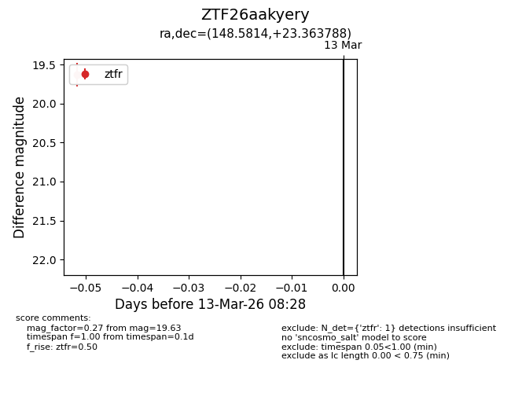
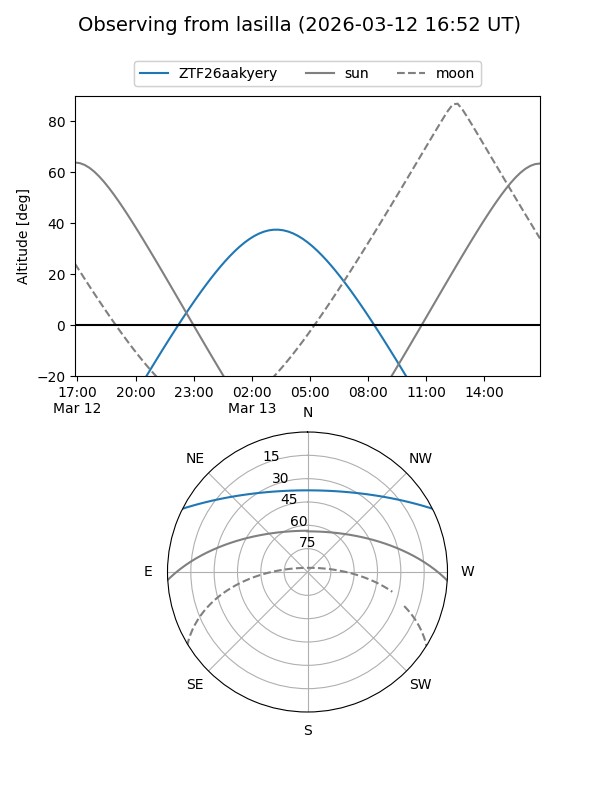
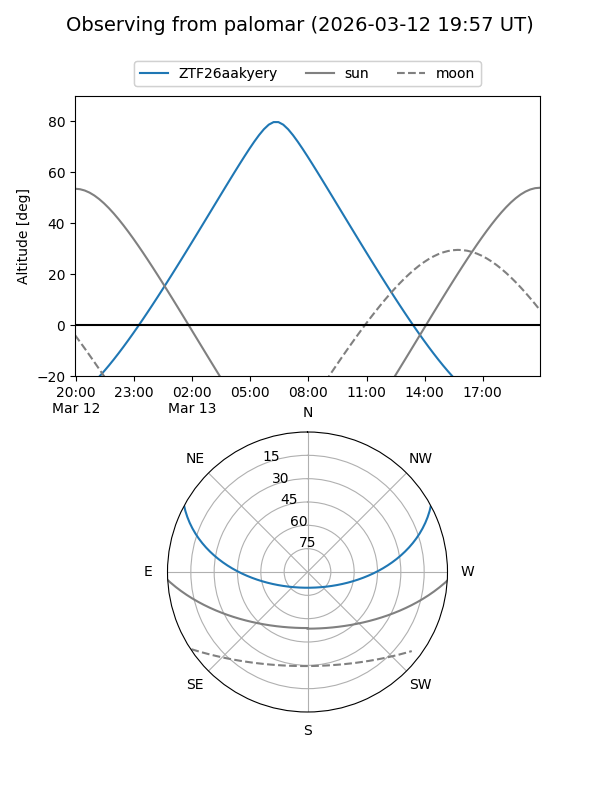

ZTF26aakyery
Target ZTF26aakyery at 2026-03-13 08:30
Aliases and brokers:
FINK: link
Lasair: link
ALeRCE: link
alt names
ZTF26aakyery (ztf,fink_ztf)
Coordinates:
equatorial (ra, dec) = 148.5814,+23.36379
equatorial (HMS+DMS) = 09:54:19.54,+23:21:49.64
galactic (l, b) = (208.1830,+49.97624)
Flags:
Photometry:
last ztfr=19.63
1 ztfr detections
Lightcurve

Visibility


Additional plots